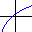

 Function model element
Function defines a real function of one variable [y = f(x)] and provides root finding and integration capabilities for it.
The element encapsulates access to Analysis routines
in the Apache Common numerics library.
Usage
To add a real function element to your model, drag the icon element to the list of your model elements
and edit it to define the function and (optionally) change the root finding and integration methods.
The element implements the following basic methods:
- double value(double x): evaluates the function at the argument
- double solve(double min, double max): finds a root in the given interval
- double solve(double min, double max, double start): finds a root in the given interval starting at the given point
- double integrate(double min, double max): integrates the function in the given interval
All these methods print an error message and return a Double.NaN value if there was any error in the computation.
Besides this, the encapsulated Apache objects can be accessed using the methods:
- void setSolver(UnivariateRealSolver solver): sets the root finding solver
- UnivariateRealSolver getSolver(): returns the root finding solver
- void setIntegrator(UnivariateRealIntegrator integrator): sets the integrator
- UnivariateRealIntegrator getIntegrator(): returns the integrator
Example of use
double y = function.value(0); // Evaluates the function at 0
double root = function.solve(0,1); // Finds a root in the interval [0,1]
double integral = function.integrate(0,1); // Integrates in the interval [0,1]